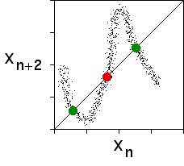

|  |
| The time series consisted of the curvature xn at the base of the ribbon, measured at equal time intervals n. | |||
| The fixed point of the return map (xn+1 vs xn) is the unstable fixed point of the ribbon. | |||
| The fixed points of the return map (xn+2 vs xn) are the unstable 2-cycle of the ribbon. | |||
|
Return to Magnetic ribbon control.